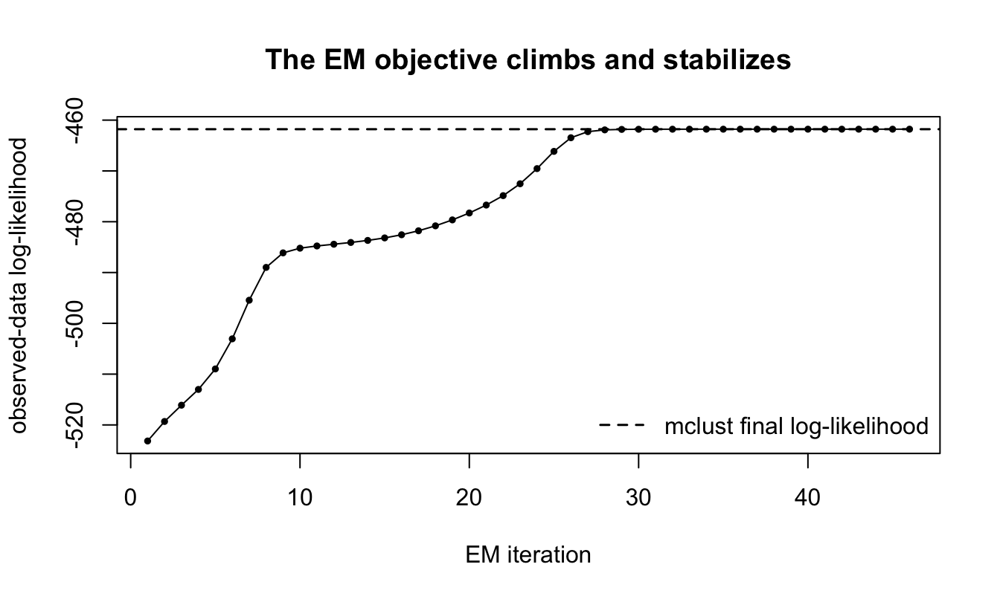

What happens when statistical algorithms become easy to code?
Thoughts
Author
Kisung You
Published
July 15, 2026
A slightly uncomfortable question
As an avid statistical programmer, perhaps once more avid than now, I have started asking a slightly uncomfortable question:
What happens to statistical computing when it becomes cheap to turn an algorithm into code?
For a long time, implementing a nontrivial statistical algorithm from scratch was a credible demonstration of expertise. One had to understand the derivation, translate it into data structures and loops, keep track of numerical issues, and debug a program whose mistakes did not always produce an error message. The final code was useful, but the process of writing it was also evidence that the author understood the computation.
AI coding agents are weakening that connection.
This became especially clear to me with algorithms such as Dirichlet process mixtures and variational Bayes. These used to be serious implementation projects. Now, with a mathematical description and a few instructions, an agent can often produce a working version in base R or Python only with NumPy without calling a specialized inference package. The first version may not be correct, efficient, or elegant, but the distance from equations to runnable code has become surprisingly short.
Rather than beginning with one of those difficult examples, let me start with something more familiar: a Gaussian mixture model and the EM algorithm. It is a good classroom example because there are already mature R packages that solve the problem, while the underlying algorithm is still short enough to implement from scratch.
A classroom example: Gaussian mixtures before and after AI
Suppose that we observe one-dimensional data from a three-component Gaussian mixture,
where the component labels are unobserved. In R, a sensible practical choice is to use a well-tested package such as mclust. For teaching, however, we might also ask students to implement the EM algorithm directly.
The two routes solve the same statistical problem:
Package route: call mclust::Mclust() and use a mature implementation.
From-scratch route: write the E-step and M-step in base R.
A third route has now become difficult to ignore:
AI-assisted route: ask a coding agent to produce the from-scratch implementation, explain it, run it, and revise it.
The first two routes are demonstrated below. The full code is included so that the example can be reproduced directly from this Quarto document. The only non-base dependency is mclust.
Simulate the data and fit both models
Show the complete simulation and fitting code
if (!requireNamespace("mclust", quietly =TRUE)) {stop("This post uses the 'mclust' package. ","Install it with install.packages('mclust') before rendering." )}set.seed(20260715)n <-220true_weight <-c(0.35, 0.40, 0.25)true_mean <-c(-3.0, 0.6, 4.0)true_sd <-c(0.6, 0.9, 0.5)z_true <-sample.int(n =3,size = n,replace =TRUE,prob = true_weight)y <-rnorm( n,mean = true_mean[z_true],sd = true_sd[z_true])mixture_loglik <-function(y, weight, mean, variance) { K <-length(weight) log_component <-vapply(seq_len(K),function(k) {log(weight[k]) +dnorm(y, mean = mean[k], sd =sqrt(variance[k]), log =TRUE) },numeric(length(y)) ) row_max <-apply(log_component, 1, max) log_normalizer <- row_max +log(rowSums(exp(sweep(log_component, 1, row_max, FUN ="-"))) )sum(log_normalizer)}em_gmm_1d <-function( y,K =3,maxit =500,tol =1e-8,minimum_variance =1e-6) { n <-length(y) mean <-as.numeric(quantile(y, probs =seq(0.2, 0.8, length.out = K)) ) variance <-rep(var(y), K) weight <-rep(1/ K, K) loglik_trace <-numeric(maxit)for (iter inseq_len(maxit)) {# E-step, evaluated stably on the log scale. log_component <-vapply(seq_len(K),function(k) {log(weight[k]) +dnorm(y, mean = mean[k], sd =sqrt(variance[k]), log =TRUE) },numeric(n) ) row_max <-apply(log_component, 1, max) log_normalizer <- row_max +log(rowSums(exp(sweep(log_component, 1, row_max, FUN ="-"))) ) responsibility <-exp(sweep(log_component, 1, log_normalizer, FUN ="-") )# M-step. effective_n <-colSums(responsibility) weight <- effective_n / n mean <-colSums(responsibility * y) / effective_n variance <-vapply(seq_len(K),function(k) {sum(responsibility[, k] * (y - mean[k])^2) / effective_n[k] },numeric(1) ) variance <-pmax(variance, minimum_variance) loglik_trace[iter] <-mixture_loglik(y, weight, mean, variance)if ( iter >1&&abs(loglik_trace[iter] - loglik_trace[iter -1]) < tol * (1+abs(loglik_trace[iter -1])) ) {break } }# Recompute responsibilities using the final parameter values. log_component <-vapply(seq_len(K),function(k) {log(weight[k]) +dnorm(y, mean = mean[k], sd =sqrt(variance[k]), log =TRUE) },numeric(n) ) row_max <-apply(log_component, 1, max) log_normalizer <- row_max +log(rowSums(exp(sweep(log_component, 1, row_max, FUN ="-"))) ) responsibility <-exp(sweep(log_component, 1, log_normalizer, FUN ="-") )# Mixture labels are arbitrary. Order them by the fitted means so that# the two implementations can be compared component by component. ord <-order(mean)list(weight = weight[ord],mean = mean[ord],sd =sqrt(variance[ord]),responsibility = responsibility[, ord, drop =FALSE],loglik = loglik_trace[iter],loglik_trace = loglik_trace[seq_len(iter)],iterations = iter )}# Package-based fit.pkg_fit <- mclust::Mclust( y,G =3,modelNames ="V",verbose =FALSE)pkg_variance <-as.numeric(pkg_fit$parameters$variance$sigmasq)if (length(pkg_variance) ==1L) { pkg_variance <-rep(pkg_variance, 3)}pkg_order <-order(pkg_fit$parameters$mean)pkg_parameter <-list(weight = pkg_fit$parameters$pro[pkg_order],mean = pkg_fit$parameters$mean[pkg_order],sd =sqrt(pkg_variance[pkg_order]),responsibility = pkg_fit$z[, pkg_order, drop =FALSE],loglik = pkg_fit$loglik)# Base-R fit.base_fit <-em_gmm_1d(y, K =3)# Densities for plotting.x_grid <-seq(min(y) -2, max(y) +2, length.out =500)true_density <-Reduce(`+`,lapply(seq_along(true_weight), function(k) { true_weight[k] *dnorm(x_grid, true_mean[k], true_sd[k]) }))pkg_density <-Reduce(`+`,lapply(seq_len(3), function(k) { pkg_parameter$weight[k] *dnorm(x_grid, pkg_parameter$mean[k], pkg_parameter$sd[k]) }))base_density <-Reduce(`+`,lapply(seq_len(3), function(k) { base_fit$weight[k] *dnorm(x_grid, base_fit$mean[k], base_fit$sd[k]) }))
The heart of the homemade implementation is still recognizable as the EM algorithm:
The surrounding code handles initialization, convergence, numerical normalization, a lower bound on component variances, and label ordering. Those details are precisely where a classroom exercise becomes a statistical computing exercise rather than a transcription of two equations.
Figure 1: An educational comparison of package-based and from-scratch computation. The left panel shows the simulated data and true density. The middle panel overlays the mclust density and the density produced by the base-R EM implementation. The right panel displays the base-R posterior component responsibilities after sorting the observations.
The density estimates are nearly indistinguishable in this easy example. That is reassuring, but it should not be surprising. Both routines are maximizing the same observed-data likelihood under the same three-component model.
The convergence plot makes another familiar property visible: an exact EM update should not decrease the observed-data log-likelihood.
plot(seq_along(base_fit$loglik_trace), base_fit$loglik_trace,type ="o",pch =16,cex =0.65,xlab ="EM iteration",ylab ="observed-data log-likelihood",main ="The EM objective climbs and stabilizes")abline(h = pkg_parameter$loglik, lty =2, lwd =1.5)legend("bottomright",bty ="n",lty =2,lwd =1.5,legend ="mclust final log-likelihood")

Figure 2: Observed-data log-likelihood across iterations of the base-R EM implementation. The dashed horizontal line is the final log-likelihood reported by mclust.
What did we actually learn?
If the goal is simply to fit this mixture, the package route is the obvious choice. It is shorter, more mature, and less likely to contain an unnoticed implementation error. The handmade version is valuable for a different reason: it exposes the computational structure.
By writing the EM algorithm, one encounters several ideas directly:
the latent labels are replaced by soft responsibilities in the E-step;
the M-step is a collection of weighted estimators;
the likelihood is the quantity that connects the two steps and gives a convergence diagnostic;
calculations should be normalized on the log scale;
Gaussian mixture likelihoods can become degenerate as a component variance approaches zero;
component labels are arbitrary, so two valid fits cannot be compared naively column by column.
This is why implementing a method from scratch has been such a useful educational exercise. It forces the student to encounter the structure that a package interface deliberately hides.
But the arrival of coding agents creates an awkward separation between the educational value of implementation and implementation as evidence of understanding.
Route
Main advantage
What it does not establish by itself
Mature package
reliable and efficient use of an established method
understanding of the internal algorithm
Handwritten implementation
direct engagement with the mathematical and numerical structure
correctness beyond the tests actually performed
AI-assisted implementation
rapid access to a readable, modifiable prototype
that the user understands or has verified the code
A student can now ask an agent to generate the same base-R routine, including the comments, convergence plot, and numerical safeguards. The code may still be pedagogically useful—the student can read it, modify it, and test it—but the mere existence of the code is no longer strong evidence that this learning occurred.
That, to me, is the important shift.
Where this sits in statistical computing
The Gaussian mixture example is only one small item in a much larger curriculum. There is no universal syllabus for an advanced statistical computing course, but public materials show a recurring collection of computational ideas.
For example, Duke’s STA 663 materials from 2018 range from matrix computation, least squares, root finding, and optimization to resampling, MCMC, HMC, compiled code, and parallel programming. Washington’s STAT 534 syllabus from 2019 lists programming, data structures, hidden Markov models, MCMC, parallel programming, and optimization. CMU’s 36-750 materials emphasize tools and practices such as version control, the shell, command-line programs, and programming best practices.
A particularly interesting sign of the transition is Michigan’s BIOSTAT 615, AI-assisted Statistical Programming. Its course description combines familiar topics—random-number generation, numerical integration, optimization, Monte Carlo methods, and EM—with implementation in R and Python using generative AI tools.
A rough map looks like this:
Computational core
Representative topics
Numerical linear algebra
least squares, QR, SVD, eigendecomposition
Optimization
root finding, Newton methods, IRLS, constrained optimization
These courses do more than teach a list of algorithms. They teach how to move between a mathematical specification and a reliable computational object. AI agents are likely to automate a large part of that translation layer, just as the Gaussian-mixture example suggests.
The next level: a collapsed Gibbs sampler
The issue becomes sharper for algorithms that have traditionally felt like major implementation projects. Consider a simple Gaussian Dirichlet process mixture model,
\[
G \sim \operatorname{DP}(\alpha,G_0), \qquad
\mu_i\mid G \sim G, \qquad
y_i\mid\mu_i \sim N(\mu_i,\sigma^2),
\]
with conjugate base distribution
\[
G_0=N(m_0,s_0^2).
\]
After integrating out the random measure and the cluster means, a collapsed Gibbs sampler repeatedly removes observation \(i\) from its current cluster and assigns it either to an existing cluster \(c\) or to a new cluster. The probabilities are proportional to
The mathematics is compact. A dependable implementation is not. Its central loop looks innocent enough:
for (i insample.int(n)) { state <-remove_observation(i, state) logp_existing <-log(state$count) +log_posterior_predictive(y[i], state) logp_new <-log(alpha) +log_prior_predictive(y[i]) choice <-sample_from_log_probabilities(c(logp_existing, logp_new) ) state <-add_observation(i, choice, state)}
Yet the code must manage a changing number of clusters, delete empty clusters, maintain sufficient statistics, evaluate probabilities stably, and summarize a random partition without treating arbitrary cluster labels as meaningful. The classic paper by Neal describes several algorithms for this problem. Translating those ideas into dependable code used to be a substantial part of the work.
An AI agent can now generate most of this machinery in a short interaction. It can also simulate data, add helper functions, create plots, and repair ordinary programming errors after running the code. The implementation barrier is clearly falling.
From runnable code to trustworthy computation
The Gaussian-mixture example was easy to check because two implementations produced nearly the same likelihood and density estimate. For a Markov chain, a plausible plot is much weaker evidence.
A Gibbs sampler can run for ten thousand iterations, produce attractive densities, and still target the wrong posterior. Some small-looking mistakes are fundamental:
Possible error
Why it may remain hidden
A useful check
Observation \(i\) is not removed before reassignment
the chain still moves and produces clusters
compare exact conditional probabilities
The likelihood at the posterior mean replaces the integrated predictive
results may look similar on easy data
compare with the closed-form predictive density
The new-cluster term mishandles \(\alpha\)
clusters are still created
vary \(\alpha\) and inspect the posterior of the number of clusters
Probabilities are computed on the ordinary scale
moderate examples still work
use extreme observations or very small \(\sigma^2\)
Raw cluster labels are averaged across iterations
trace plots still look active
use pairwise co-clustering probabilities
This suggests a distinction that I find increasingly useful:
\[
\text{time to runnable code}
\quad \ll \quad
\text{time to trustworthy computation}.
\]
For a tiny DPMM dataset, there is a strong independent check. If \(\mathcal{C}\) is a partition of the observations, then its collapsed posterior probability is, up to normalization,
where \(m(y_c)\) is the cluster marginal likelihood after integrating out its mean. With \(n=8\), there are only 4,140 set partitions. We can enumerate them and compare the Gibbs output with the exact posterior distribution of the number of clusters or the exact pairwise co-clustering probabilities.
The agent may be able to write the sampler. The harder question is whether the user knows that this oracle is available, can implement it independently, and can interpret the discrepancy between finite Monte Carlo output and the exact target.
That is why I hesitate to say that statistical computing knowledge is becoming obsolete. The activity is changing shape. Production is becoming cheap; specification, diagnosis, and verification may become relatively more important.
What should we teach now?
Asking students to implement EM, Gibbs sampling, or coordinate descent once served two purposes:
it gave them direct experience with the algorithm, and
it provided evidence that they understood the algorithm.
The first purpose remains valuable. The second has become unreliable.
Perhaps assignments should increasingly ask students to do things that are harder to outsource without understanding:
explain why an update optimizes or samples from the intended quantity;
identify a subtle error in generated code;
construct a dataset on which the error becomes visible;
derive an invariant or limiting case;
compare the implementation with an exact small problem;
modify the model and determine which equations and data structures must change;
explain what evidence would be sufficient to trust the result.
This does not mean that students should never write algorithms from scratch. It means that the learning objective and the assessment need to be separated more carefully.
Questions I want to leave open
I do not yet know the answers to the following questions.
If an agent can implement a standard algorithm from equations, which parts should students still be required to code manually?
Does implementing an algorithm remain a good way to learn it, even when implementation is no longer good evidence of understanding?
Can agents also automate verification, or will code generation and test generation reproduce the same misunderstanding?
What should journals, reviewers, and software maintainers ask for when substantial parts of a statistical implementation are machine-generated?
Will the future computational statistician be valued less for writing algorithms and more for specifying, auditing, modifying, and certifying them?
A natural follow-up would be to make the DPMM discussion concrete: provide the exact prompt, inspect an agent-generated implementation, and compare it with a small exact-posterior calculation. The purpose would not be to declare one agent generally correct or incorrect. It would be to see which parts of the workflow have become cheap, which parts remain difficult, and where statistical judgment enters.
Final Thoughts
AI coding agents do not make statistical computing disappear. They may instead change its bottleneck.
The Gaussian-mixture example shows the basic transition. A mature package gives us the answer. A handwritten EM implementation reveals the machinery. An AI coding agent can now produce much of that handwritten implementation on demand. What was once a meaningful barrier to entry is becoming much lower.
The next distinction may therefore be between those who can obtain plausible computation and those who know what would make that computation credible.
When the algorithm begins to write itself, the important question is no longer only
Can I implement this method?
but also
What did I learn from the implementation, and what evidence would make me trust it?
Citation
BibTeX citation:
@online{you2026,
author = {You, Kisung},
title = {What Happens When Statistical Algorithms Become Easy to
Code?},
date = {2026-07-15},
url = {https://kisungyou.com/Blog/blog_006_StatisticalComputingAI.html},
langid = {en}
}